Building top N words using dtAssemble
You can build top N words using dtAssemble – the graphical drag-and-drop application builder.
Note: This tool is not available with the Community edition license.
Using the application builder, you can manually drag and drop participating operators on to the application canvas and connect them to build the DAG for the top N words application. You can move the application canvas in any direction using your mouse. You can also try the auto-layout and zoom-to-fit buttons at the top-right of the canvas to create an initial arrangement.
Note: You cannot undo the auto-layout or zoom-to-fit operations.
Prerequisites
To use dtAssemble, you should have uploaded an application package that contains all the operators you intend to use. The new application will reside in that package. For this exercise, we will use the package that you built and uploaded in the earlier chapter.
To ensure that the full complement of sandbox resources are available for running the current application, ensure that no other applications are running by clicking the Monitor tab, and under DataTorrent Applications, kill any running applications.
Step I: Create top N words using dtAssemble
- Log on to the DataTorrent RTS console (default username and password are
both
dtadmin). - On the DataTorrent RTS console, click Develop ⇨ App Packages.
- Make sure that the top N words package that you built following the instructions of the previous chapter is uploaded.
- Click TopNWordCount in the name column to see the application details. 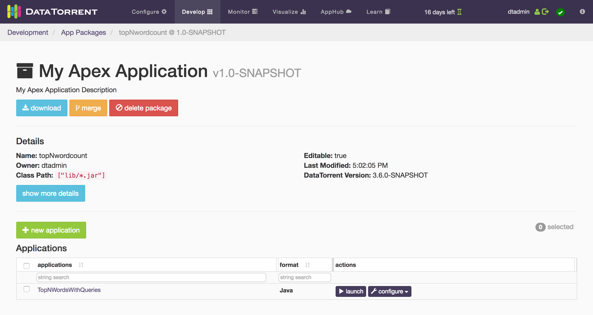
- Click create new application button. 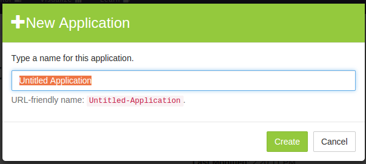
- Type a name for your application, for example, TopNWordsJson, and click Create. The Application Canvas should open. 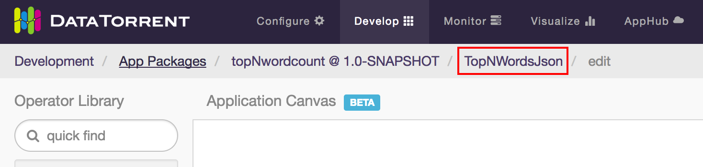
- Click the breadcrumbs link to the Application page, in this case, TopNWordsJson.
The existing application is a JAVA application. Applications that you create using dtAssemble are JSON applications. For JSON applications, there is an extra edit button on the application page which brings you to dtAssemble. The edit option is not available for JAVA applications.
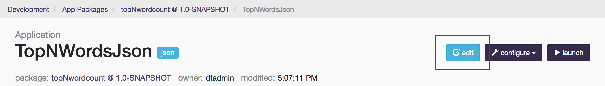
Click the edit button to go back to dtAssemble.
Step II: Drag operators to the application canvas
- Wait till the Application Canvas opens. 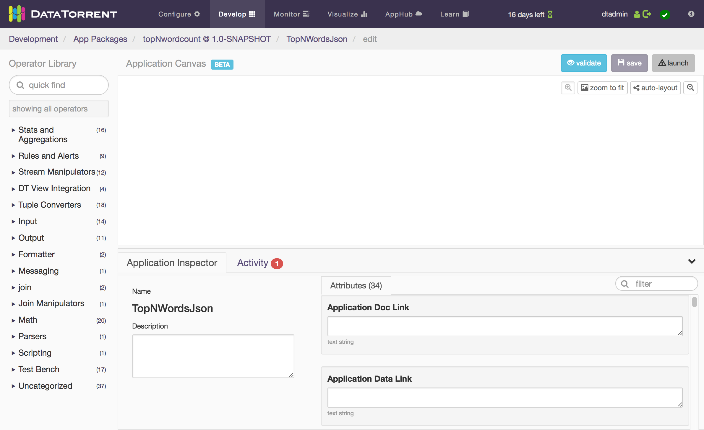
- From the Operator Library list on the left, locate the desired operators by either:
-
Exploring the categories.
-or-
-
Using the quick find feature by typing the first few letters of the name of the implementing class or related terms in the search box. For example, to find the file reader, type file into the search box to see a list of matching operators. For example, the first operator is LineReader. 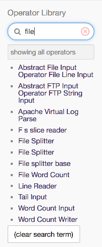
- Drag the operator onto the canvas.
- Repeat this process for all the operators described in Appendix entitled Operators in Top N words application, and arrange them on the canvas.
- To magnify or shrink the operators, use the buttons in the top-right corner. You can also use the scroll wheel of your mouse to zoom in or out. The entire canvas can also be moved in any direction with the mouse.
Step III: Connect the operators
Observe that each operator shows output ports in pink and input ports in blue. The names of the operators and the corresponding JAVA classes are also shown. You can change the operator name by clicking it, and then changing the name in the Operator Name box in the Operator Inspector panel.
Connect the operators as shown in the diagram below. Note the following points about the FileWordCount operator which has the largest number of connections:
- The control port is connected to the control port of LineReader.
- The input port is connected to the output port of WindowWordCount.
- The fileOutput port emits the final top N pairs to the corresponding output file and so is connected to the input port of WordCountWriter.
- The outputGlobal port emits the global top N pairs and so is connected to the input port of AppDataSnapshotMapServer.
- The outputPerFile port emits the top N pairs for the current file (while the file is still being read) and so it is connected to ConsoleOutput as well as to AppDataSnapshotMapServer.
Note: As you make changes, you may wish to save your progress by clicking the save button on the top right.
After you connect all the operators, the canvas looks like this. Although presented differently, it is the same as the logical DAG for the Java application.
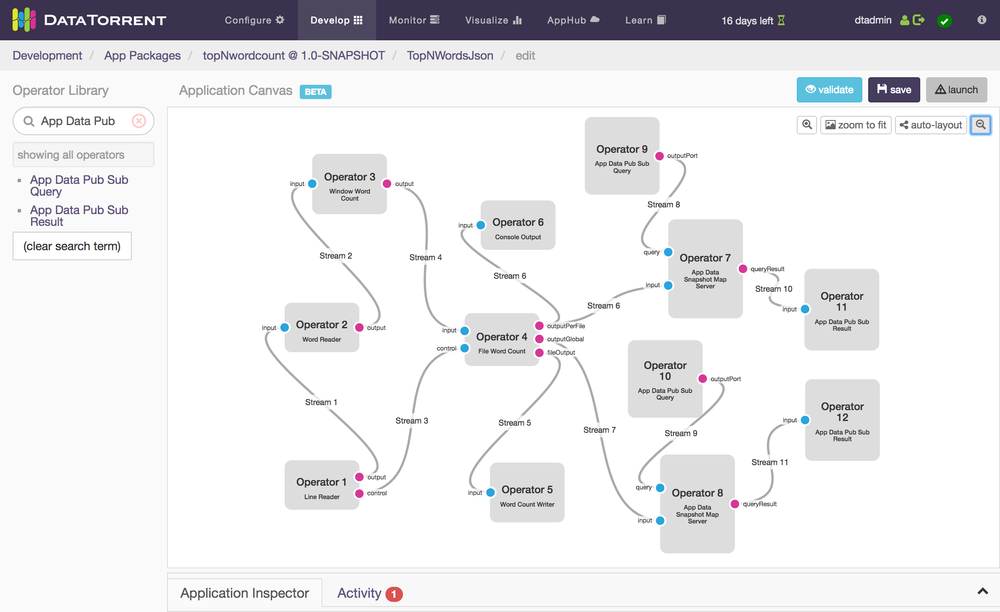
Step IV: Configure the operator properties
The last step before running this application is to configure properties of the operators.
- Click the first operator (LineReader) in the canvas to see the list of configurable properties in the right panel.
-
Locate the property labelled Directory and enter the path to the input directory:
/tmp/test/input-dir: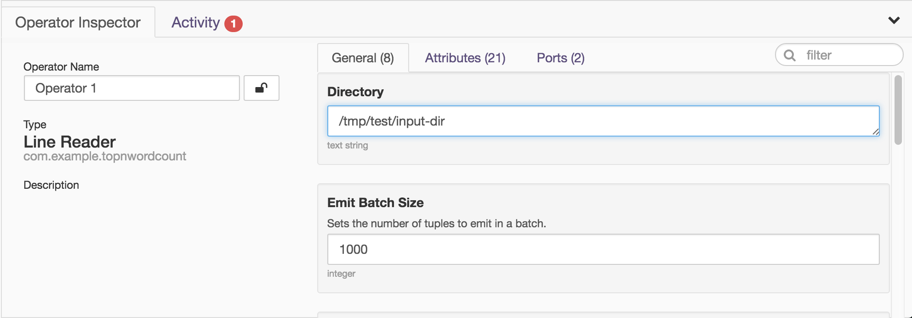
-
Configure the properties of the remaining operators using this table for reference. The table contains the same values that we set in the properties file for the Java application.
Operator
Property Name
Value
5
File Path
/tmp/test/output-dir
2
Non Word Str
[\p{Punct}\s]+
9
Topic
TopNWordsQueryFile
10
Topic
TopNWordsQueryGlobal
11
Topic
TopNWordsQueryFileResult
12
Topic
TopNWordsQueryGlobalResult
7, 8
Snapshot Schema JSON
{ "values": [{"name": "word", "type": "string"},
{"name": "count", "type": "integer"}] }
4
Top N
10
-
Click Stream 8 and Stream 9, and change Stream Locality from
AUTOMATICtoCONTAINER_LOCALto match our earlier properties file. After you perform this step, the line for the stream will change from a solid line to a dotted line. -
Click the blank area of the canvas to see the application attributes in the right panel. Scroll to Master Memory Mb, and change its value to 500.
-
Click each operator, navigate to the Memory Mb attribute in the Attributes section, and change the value to 200 except for Operator 4 for which the value is 512.
-
Click save in the top-right corner. You can click the Activity tab in the Inspector panel on the bottom to monitor the validation and save process.
-
Click launch in the top-right corner. Note: Before launching the application, shut down the IDE; if it is running at the time of a launch, the sandbox might hang due to resource exhaustion. 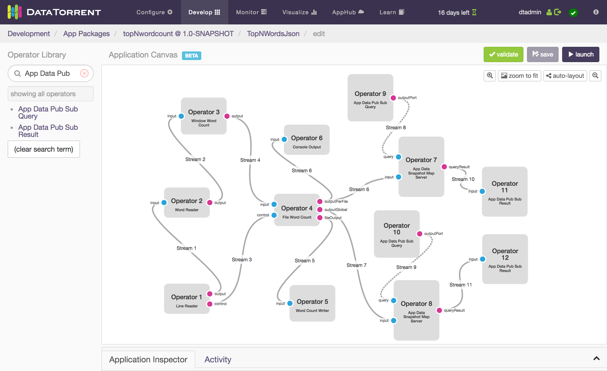
-
On the launch application dialog window, type a name for your application. 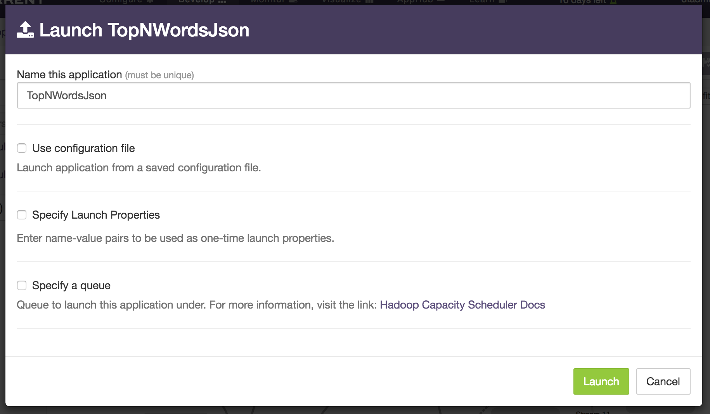
-
(Optional) To configure the application using a configuration file, select Use a config file checkbox. To specify individual properties, select Specify custom properties checkbox.
- Click Launch.
A transient pop-up at the top-right indicating that the launch was successful should appear. 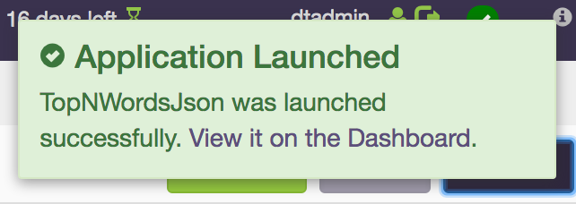
After a successful launch, monitor the application following instructions in the Chapter entitled Monitoring with dtManage.